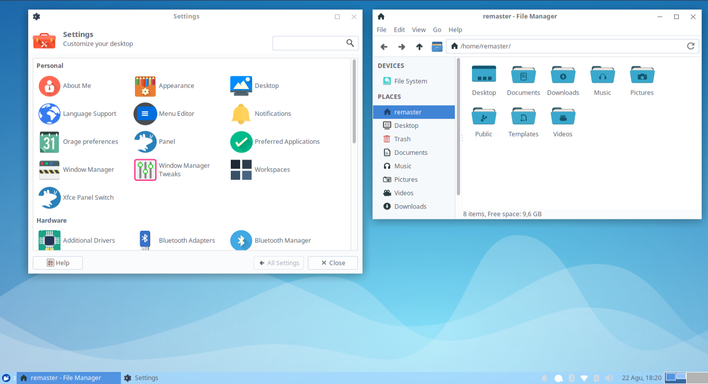

Processor Intel Atom
Processor Intel Atom
WiyataOS



WiyataOS adalah sebuah distro Linux turunan Ubuntu 18.04 (Bionic Beaver) yang bertemakan Edukasi, dan di kembangkan oleh Politeknik Harapan Bersama Linux User Group Indonesia (PLUGIN) dengan menggunakan desktop XFCE kami berharap semua kalangan dapat menikmati sebuah "masterpiece" walaupun menggunakan komputer dengan spesifikasi rendah
Processor Intel Atom
RAM 2 GB
Hardisk 80 GB

Wiyata module adalah aplikasi yang memudahkan pengguna memasang aplikasi dengan mudah, cepat dan offline. Cukup pasang, hanya yang kamu butuhkan.
Beralih tema dengan sekali klik! Secara bawaan, WiyataOS memiliki dua mode tema, Developer mode (Dark) dan Normal mode (Light)